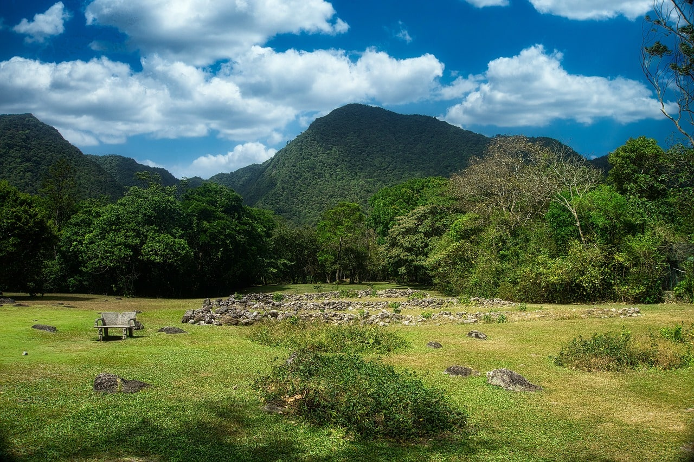

Naturaleza, cultura y aventura en la provincia de Coclé

Vista panorámica de El Valle de Antón
•
La India Dormida.
•
El Chorro El Macho.
•
El mercado de artesanías y productos locales.
•
Los senderos y jardines naturales.
•
Los pozos termales.
1.
Llegar temprano y desayunar en el centro del pueblo.
2.
Visitar un sendero natural o el Chorro El Macho.
3.
Recorrer el mercado de artesanías.
4.
Almorzar en un restaurante de la localidad.
5.
Finalizar la visita contemplando el paisaje del valle.
•
Utilizar ropa cómoda y calzado apropiado para caminar.
•
Llevar agua, protector solar y repelente.
•
Depositar los residuos en los lugares indicados.
•
Respetar la flora, la fauna y las normas de cada sitio.
▶ ¿Qué artículos debe llevar el visitante?
Para ampliar la información, visite el sitio oficial de turismo de Panamá.
También puede ver un video sobre El Valle de Antón en YouTube.